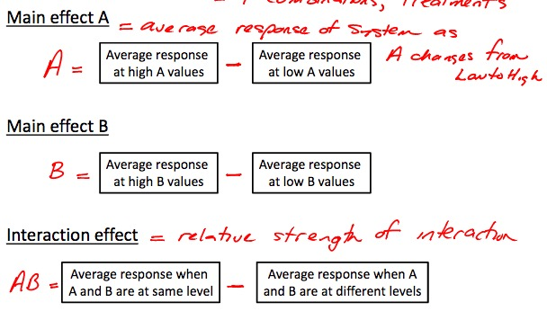
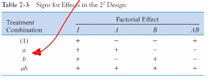
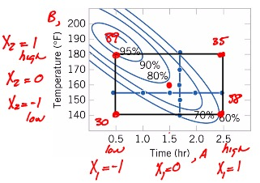
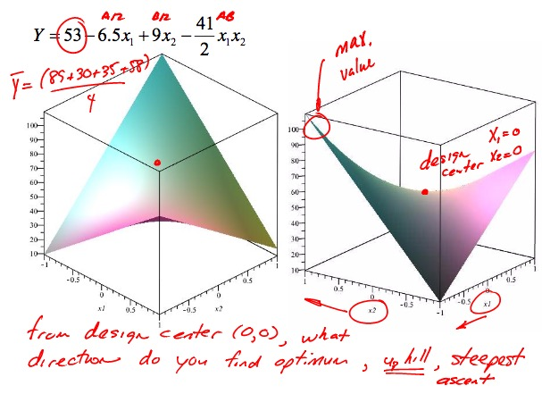
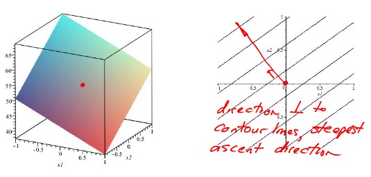

\(2^3\) contrast table


Main Effect: \[ \begin{align} A &= \frac{[a + ab - b - (1)]}{2n} \\ B &= \frac{[b + ab - a - (1)]}{2n} \end{align} \] Interaction Effect: \[AB = \frac{[ab + (1) - a - b]}{2n}\] Get the signs from the contrast table.
Approaches: 1. Hypothesis Testing 2. Confidence Interval
Standard Error of Effects \[S_e = \sqrt{\frac{ \hat{\sigma}^2 }{ n \cdot 2^{k-2} }}\]
\[ \begin{align} \hat{\sigma}^2 &= \frac{ \sum_{i=1}^{2^k} \hat{\sigma_i}^2 }{2^k} \\ \hat{\sigma_i}^2 &= \frac{ \sum_{j=1}^{n} (y_{i,j} - \overline{y_i})^2 }{ n - 1 } \end{align} \] where:
- \(\hat{\sigma}^2\): Average of variances for each treatment
- \(\hat{\sigma_i}^2\): Variance at each treatment
\(H_0: Effect = 0\)
\(H_A: Effect \neq 0\)
Use t distribution since \(\sigma^2\) is unknown \[ \begin{align} t_{\text{ratio}} &= \frac{\text{effect}}{S_e(\text{effects})} \\ k &= 2^K (n-1) \tag{d.o.f.} \end{align} \]
\[\text{effect} \pm 2 \cdot S_e(\text{effects}) \tag{\approx 95% C.I.}\] If the 95% CI contains zero, effect is not significant
\(2^3\) contrast table
\[A = \frac{[\text{contrast}]}{4n}\] Note effects are divided by 4n now.
\[Y = \overline{y} + (\frac{A}{2})x_1 + (\frac{B}{2})x_2 + (\frac{AB}{2})x_1 x_2\] 

- Reduce response surface to 1st order by removing interaction term
- Go orthogonal to contour lines (orthogonal to response equation without interaction term) 